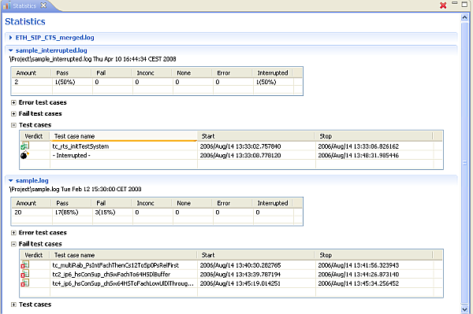

A view with statistical information of all test cases included in the selected log files is displayed.
Each log file is displayed in a separate section including four
tables. One with the number of test cases for each verdict, where the Interrupted
column is used if the extraction of the log file was interrupted, one
listing all test cases with verdict Error  ,
one listing all test cases with verdict Fail
,
one listing all test cases with verdict Fail  and one listing all included test cases. The Error test cases, Fail test cases
and Test cases tables is expandable. The Error and Fail tables is expandaded
if test cases exists.
and one listing all included test cases. The Error test cases, Fail test cases
and Test cases tables is expandable. The Error and Fail tables is expandaded
if test cases exists.
By selecting a test case in one of the tables a context menu with action for
opeing the message sequence chart or the text table is avaible.
